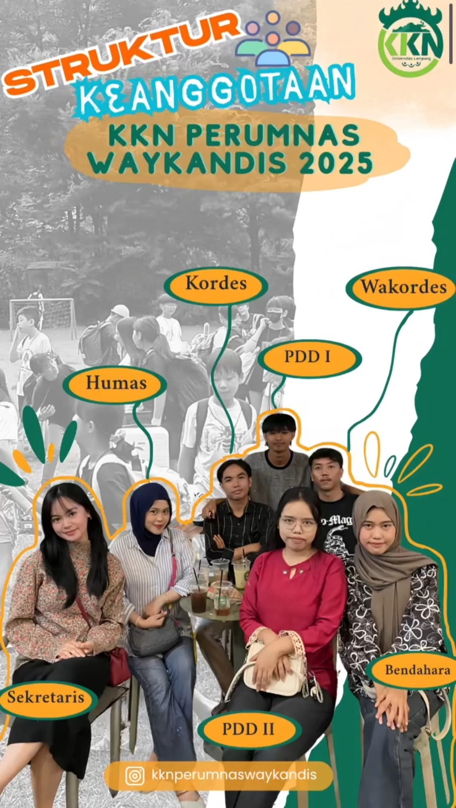

KKN Perumnas Way Kandis
Mengabdi untuk Negeri, Meraih Masa depan Cemerlang
Mengabdi untuk Negeri, Meraih Masa depan Cemerlang
Kami mahasiswa/i Kuliah Kerja Nyata (KKN) dari Universitas Lampung dengan penuh semangat dan rasa hormat, mengucapkan selamat datang di website resmi KKN Desa Way Kandis. Kehadiran kami di desa ini merupakan bentuk pengabdian kepada masyarakat sebagai bagian dari wujud nyata Tri Dharma Perguruan Tinggi. Melalui program ini, kami bertekad untuk berkontribusi dalam memajukan desa melalui berbagai program kerja yang bermanfaat, kreatif, serta sesuai dengan kebutuhan masyarakat. Besar harapan kami, sinergi antara mahasiswa dan masyarakat Desa Way Kandis dapat terjalin dengan baik demi menciptakan lingkungan yang lebih maju, harmonis, dan sejahtera.
